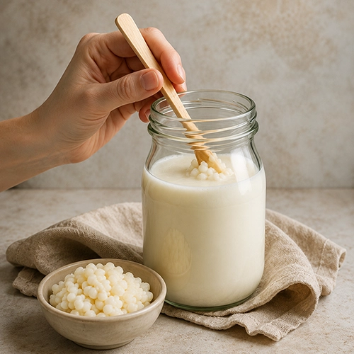
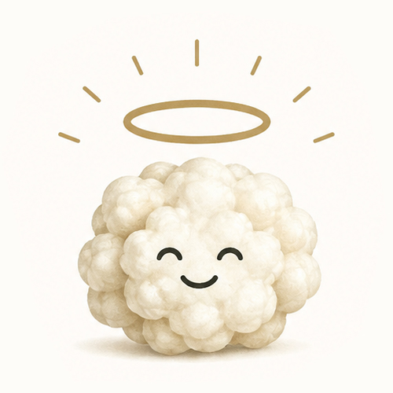

Un frasco, unos pequeños nódulos y mucha curiosidad
Todo comenzó con unos pequeños nódulos, un frasco de leche y mucha curiosidad. Lo que al principio era una preparación casera pronto se convirtió en una pasión por la fermentación, sus tiempos y las infinitas posibilidades que podía ofrecer un alimento tan sencillo.
Una tradición con siglos de historia
Nuestra historia es reciente, pero la del kéfir tiene siglos de recorrido. Su origen se relaciona tradicionalmente con las montañas del Cáucaso, donde distintas comunidades fermentaban leche utilizando los característicos nódulos de kéfir. Generación tras generación, estos cultivos fueron conservados y compartidos, permitiendo que esta tradición viajara mucho más allá de su lugar de origen hasta convertirse en un alimento conocido alrededor del mundo.
Caucaso
Origen ancestral
Tradición
Conocimiento que se transmite
Generaciones
Cultivos que se cuidan y se comparten
Mundo
El mundo que cruza fronteras
Santo Kefir
Nuestra forma de honrar esa historia
Y entonces nacio Santo kefir
Así nació Santo Kéfir: respetando la esencia del kéfir, pero dándole una identidad más fresca, divertida y pensada para formar parte del día a día.
Creemos que detrás de las cosas más simples pueden existir historias extraordinarias. Por eso nuestro pequeño nódulo con aureola representa exactamente lo que somos: un homenaje al cultivo que hace posible todo lo demás.
